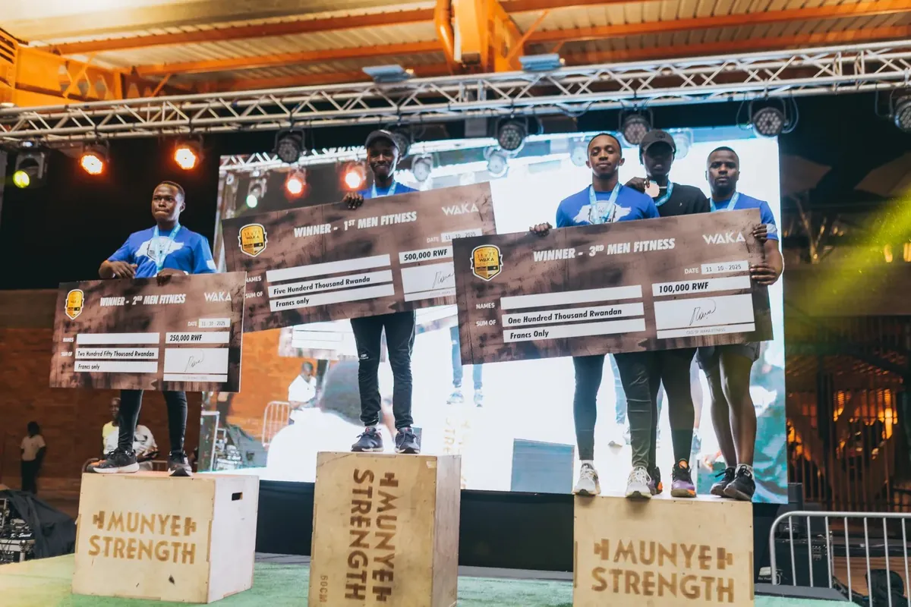

Best for
Early mornings
Doors open at 05:00 Monday to Friday — the earliest start in the network.

Kibagabaga · Gasabo
The neighbourhood club — formerly Cali Fitness — for early starts, free parking and a quieter floor.
03
The club
WAKA Kibagabaga is what happens when a well-loved local gym joins a bigger family. Previously operating as Cali Fitness, it brought with it a loyal neighbourhood membership and a straightforward, no-fuss training culture.
The club opens at 05:00 on weekdays — half an hour before the others — which makes it the one to choose if your session happens before the city wakes up. Free parking, a full free-weights and cardio floor, and none of the downtown foot traffic.
On KG 19 Avenue in Kibagabaga, east of the city centre, a few minutes from Nyarutarama and Kimironko.
There is free parking on site, which makes this the easiest club to reach by car. By moto it is roughly fifteen minutes from the CBD outside peak hours.
Nearby: Kibagabaga, Nyarutarama, Kimironko.
Best for
Doors open at 05:00 Monday to Friday — the earliest start in the network.
On the floor
Free weights, racks, cardio machines and a functional area in a compact, well-run space.
Beyond the gym
Pull up, park, train, leave. Ideal if you are coming from Nyarutarama, Kibagabaga or Kimironko.
Practical
Monday to Friday 05:00–22:00, and 06:00–21:00 on Saturday and Sunday.
Yes. The club operated as Cali Fitness before joining WAKA. Existing members were carried across, and the coaching team stayed with the club.
Yes, free parking is available on site — one of the reasons members from Nyarutarama and Kimironko choose this club.
WAKA Kibagabaga is the natural choice: earliest opening hours, free parking, and a quieter floor than downtown. An annual membership still gives you access to all three clubs.
WAKA Kibagabaga
No booking needed for a tour. KG 19 Avenue, Kibagabaga · Gasabo. Call 0788 797 009 if you want someone waiting.